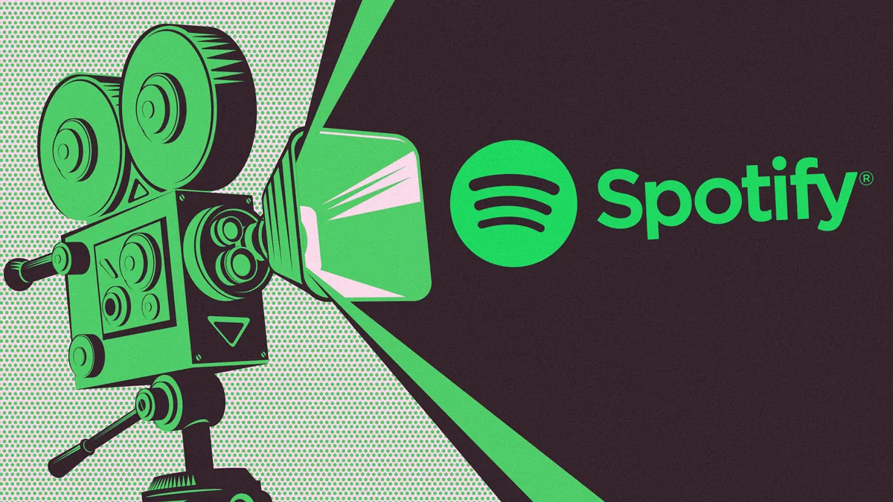
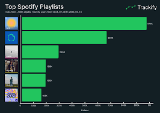

Aqui você encontra as melhores playlists, músicas e eventos, criados especialmente para os amantes da música. Nossa missão é proporcionar uma experiência única e personalizada, conectando você com o que há de melhor no mundo musical. Explore e descubra novas músicas, artistas e eventos que você vai adorar!
Oferecemos conteúdos atualizados e selecionados cuidadosamente para garantir que você esteja sempre por dentro das tendências musicais. Navegue por nossas playlists exclusivas, conheça novos artistas e fique por dentro dos shows que vão marcar época. Seja você um ouvinte casual ou um verdadeiro apaixonado por música, esse espaço foi feito para você!
Seja para relaxar, malhar, ou curtir com os amigos, temos a playlist perfeita para cada momento! Com curadoria especial, nossas playlists são atualizadas regularmente para você sempre encontrar algo novo e empolgante. Explore as playlists mais populares e crie sua própria trilha sonora para o dia a dia. Não importa o seu estilo, temos algo que vai te surpreender!
Seja para relaxar, malhar, ou curtir com os amigos, temos a playlist perfeita para cada momento! Com curadoria especial, nossas playlists são atualizadas regularmente para você sempre encontrar algo novo e empolgante. Explore as playlists mais populares e crie sua própria trilha sonora para o dia a dia. Não importa o seu estilo, temos algo que vai te surpreender!
As músicas mais tocadas do momento estão aqui! Fique por dentro dos hits que estão bombando em todo o mundo. Se você é fã de pop, rock, rap ou qualquer outro estilo, as faixas mais populares estão sempre atualizadas para você. Ouça agora e não perca a chance de descobrir o que está dominando as paradas!
As músicas mais tocadas do momento estão aqui! Fique por dentro dos hits que estão bombando em todo o mundo. Se você é fã de pop, rock, rap ou qualquer outro estilo, as faixas mais populares estão sempre atualizadas para você. Ouça agora e não perca a chance de descobrir o que está dominando as paradas!
Fique por dentro dos eventos e shows mais incríveis da cena musical! De grandes festivais a shows intimistas, temos a agenda completa para você não perder nenhuma oportunidade de viver a música ao vivo. Se você tem um evento ou show para divulgar, entre em contato conosco para mais informações. Juntos, podemos fazer a sua música chegar mais longe!